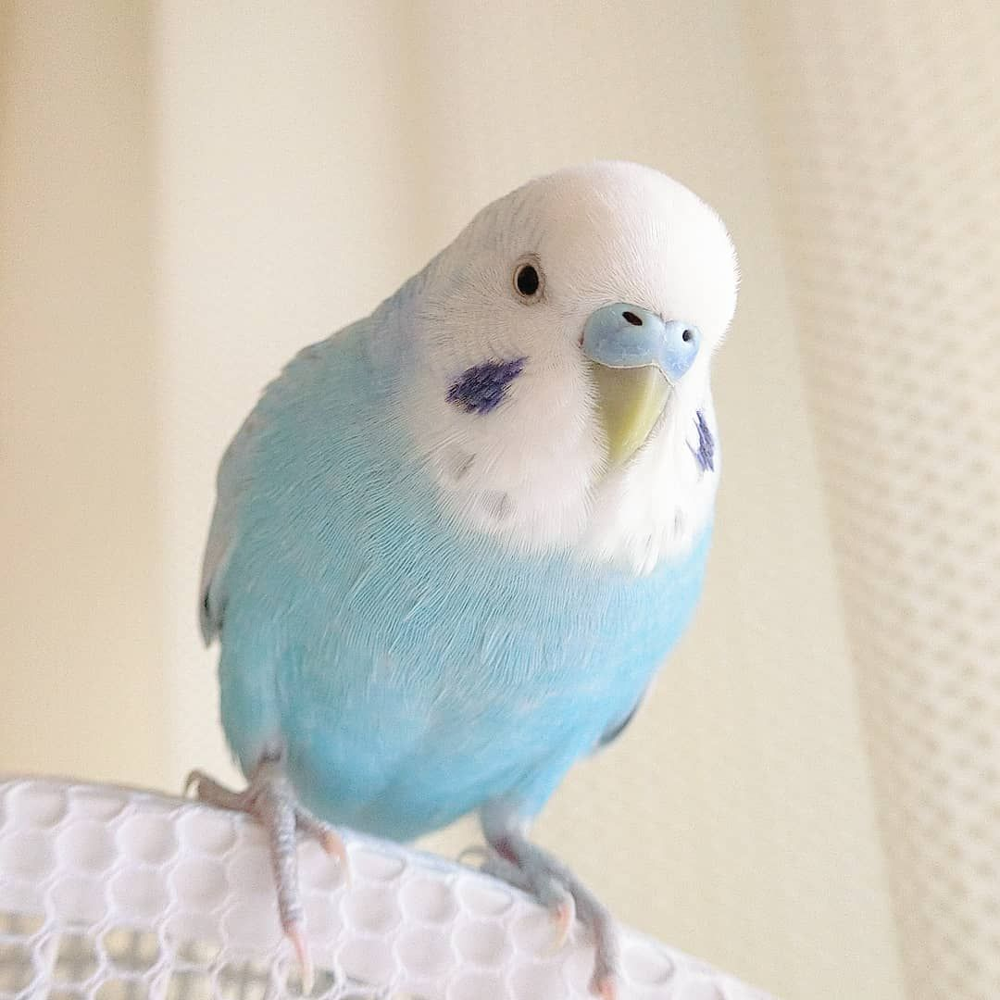

鸚鵡介紹
虎皮鸚鵡是一種體形較小的鸚鵡，連同尾羽體長在18厘米左右，體重30－40克（1.1－1.4盎司）（1.1–1.4盎司），將翅膀展開後約30 cm（12英寸）（12英寸）。人工飼養種的體形略大於野生種。原生種主要為黃綠色型。虎皮鸚鵡的頭部及背為黃綠色遍布細的黑色橫紋，如同虎身上的條紋，也因此而得名。它的腰、胸及腹部為綠色。尾羽幾乎與身體等長，中央尾羽兩隻為最長呈深綠色，其他尾羽呈綠色對稱排列。嘴下至頸部羽毛黃色不具橫紋，面頰部各有一塊藍紫色橢圓斑。頸部有一圈黑色近圓形斑，如同項鍊。雌雄同色，僅在蠟膜的顏色有差異。幼體雄鳥鼻膜為紅潤肉色，特定品系如白黃化、華樂、隱性派特及部分荷蘭顯性派特之雄鳥，成熟後鼻膜也不會變色，其他品系雄鳥成熟後會轉變為藍色，幼體雌鳥會從鼻孔邊泛白擴散到整片鼻膜為灰白色或邊緣淡藍色，繁殖受阻時，受荷爾蒙影響，會轉變為淡黃色、褐色、深褐色。喙為黃色，具鉤，起到爪的作用，幫助攀爬。眼睛為圓形，瞳孔黑色，虹膜灰白色。跗跖很短，被羽毛遮住。足為對趾足，利於抓握。
虎皮鸚鵡最早的顏色變異出現在1850年代，從此很多人熱衷於培育各種色型的品種。目前人工培育出的主要色型有藍色、黃色、白色（白化種）等，有的品種同時具備多種顏色。有些人工種的頭背部的黑斑暗淡甚至全無。
